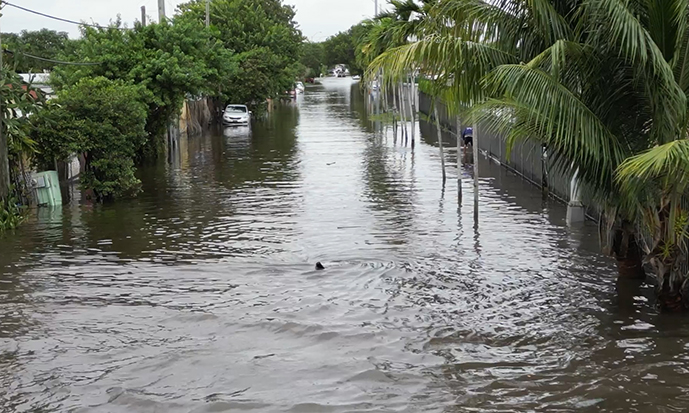
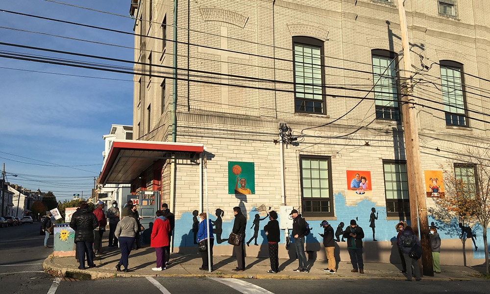

|  |
Floods of Trouble data viz, reporting, design |
Miami Herald | 2025 |
|
Shakedown City |
Investigations, lawsuits and the anatomy of Miami’s political scandals
National Headliner Award, Semifinalist for Goldsmith Prize for Investigative Reporting data viz, reporting, design |
Miami Herald | 2023 | |
|
Toxic Deals | For decades, SC farmers have fertilized fields with sludge. It could be having toxic impacts
The Green Eyeshade Award data viz, reporting, design |
The State | 2023 | |
|
Killer Train data viz, reporting |
Miami Herald / WLRN | 2025 | |
|
Killer Train | The podcast reporting |
Miami Herald / WLRN | 2025 | |
 |
Breaking News | How close was golf course gunman to Trump? data viz, reporting |
Miami Herald | 2024 |
|
Private Eyes | Camera by camera, North Carolina police build growing network to track vehicles data viz |
The News & Observer | 2024 | |
 |
Built on Sand data viz, reporting, design |
Miami Herald | 2025 |
|
From backbench congressman to debate limelight: The rise of Ron DeSantis, soundbite by soundbite data viz, reporting, design |
Miami Herald | 2023 | |
 |
NFL Draft in Kansas City | Interactive Map
AP Sports Editors Contest Winner data viz, design |
The Kansas City Star | 2023 |
 |
Wrecked Justice | How investigators, prosecutors bungled probe into boat crash that killed teen girl
IRE Finalist, National Headliner Award Second Place data viz, reporting, design |
Miami Herald | 2024 |
|
Guilty of Grief | Tragedy on body cam: Miami-Dade police killed her son. Her questions cost her everything
Nieman Foundation Taylor Family Award for Fairness in Journalism Finalist, The Green Eyeshade Award data viz, reporting, design |
Miami Herald | 2024 | |
|
Deadly Dose | ‘It’s wiping our youth out.’ How fentanyl has killed hundreds in the Kansas City area
IRE Finalist data viz, reporting, design |
The Kansas City Star | 2023 | |
|
The Foreclosure Franchise | Families lose homes after Florida cities turbocharge development enforcement foreclosures
National Press Foundation Economic Justice Journalism Award, Scripps Howard Journalism Award Finalist data viz, reporting |
Miami Herald | 2023 | |
|
Sacramento hit-and-run drivers leave staggering death toll, Bee investigation reveals data viz, design |
The Sacramento Bee | 2023 | |
 |
Exposed & Overlooked | Invisible peril? Some NC communities stuck with higher pollution exposure risks data viz, design |
The News & Observer | 2023 |
 |
Dirty Cleaners | How pollution from dry cleaners left California sitting on cancer-linked ‘time bombs’
data viz |
The Tribune | 2023 |
|
$13 billion in Idaho gold. A mineral critical to U.S. defense. And fresh fears for salmon
data viz, design |
Idaho Statesman | 2025 | |
 |
Helene's Toll | The storm stole more than 100 lives in North Carolina. Here are their stories.
design, development |
The News & Observer | 2025 |
|
Healing from Helene | Who’s responsible for Helene recovery in NC and what progress have they made? data viz |
The Charlotte Observer | 2025 | |
 |
Haiti's Lost Generation design |
Miami Herald | 2025 |
|
Dr. Feelgood | Miami Beach doctor was charged with sex trafficking a minor. Then she was found dead data viz, design |
Miami Herald | 2024 | |
 |
California forces migrant farmworker students to move every year. ‘We need to survive’ design |
The Sacramento Bee | 2023 |
|
The Big Swing design |
The State | 2024 | |
|
They bought their dream homes from the ‘King of Coconut Grove.’ They still can’t move in data viz |
Miami Herald | 2023 | |
 |
Cliffs, bunkers, mammoth bones: Miami-Dade County's most intriguing high points data viz |
Miami Herald | 2023 |
 |
NC insurance commissioner ran against ‘good ol boy’ politics. Critics say he embraced it data viz |
The News & Observer | 2023 |
|
Breaking News | See how your KC neighborhood would vote under proposed gerrymandered Missouri maps data viz |
The Kansas City Star | 2025 | |
 |
Center for American Politics and Design archiving, reporting, design |
Project | 2018-2024 |
 |
Columbia Journalism School Projects data viz, reporting, design |
CJS | 2022 |
|  |
Working the Polls photography |
N+1 | 2020 |